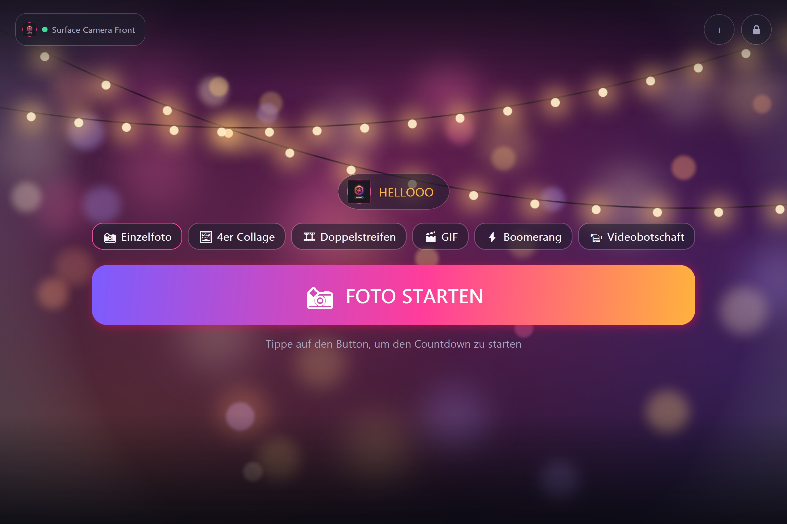

Lumio macht aus Tablet, Handy, PC oder Raspberry Pi eine Fotobox für Partys, Hochzeiten und Events – mit Kamera, Countdown, Looks und Sofortdruck auf dem Canon Selphy.
Bald auch im Google Play Store. Alle Versionen und Änderungen: Releases · Changelog

Einzelfoto, 4er-Collage, Fotostreifen, GIF, Boomerang und Videobotschaft.
Gäste wählen nach der Aufnahme Sonnig, Glam S/W, Vintage & Co. – optional mit Schönheitsfilter.
Canon Selphy per USB oder WLAN, randlos auf 10×15-Fotokarten.
Nikon, Canon, Sony & mehr, USB-Webcams oder die Kamera des Tablets.
Das Live-Bild läuft erst ab dem Countdown – schont Kamera- und Tablet-Akku.
Kein Konto, keine Werbung, kein Tracking. Alle Fotos bleiben auf deinem Gerät.